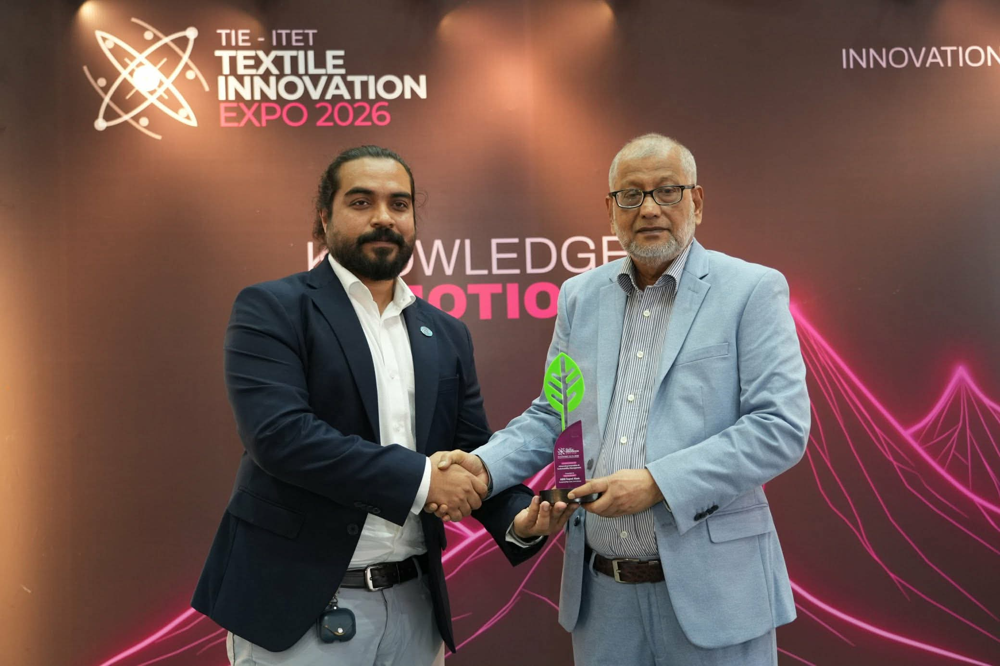

BD Barguna News
সত্যের সন্ধানে, মানুষের পাশে।
অর্থনীতি
পোশাক খাতে সাসটেইনেবল পরিবেশ ও শিল্পের উদ্ভাবনের সমন্বয়: টেক্সটাইল ইনোভেশন এক্সপোতে বিশেষজ্ঞদের আলোচনা সভা অনুষ্ঠিত
📅 প্রকাশিত: ১২ নভেম্বর, ২০২৬ এ ২:১৪ PM
👁️ পাঠসংখ্যা লোড হচ্ছে...

ছবি - সংগৃহীত
বাংলাদেশের বস্ত্র ও পোশাকশিল্পের বৈশ্বিক প্রতিযোগিতা সক্ষমতা বাড়াতে পরিবেশগত বাধ্যবাধকতা ও শিল্প ব্যবস্থাপনার পরিমাপযোগ্য ইনোভেশনের মধ্যে সমন্বয় তৈরির ওপর গুরুত্বারোপ করেছেন শিল্পসংশ্লিষ্ট বিশেষজ্ঞরা।
রাজধানীর আন্তর্জাতিক কনভেনশন সিটি বসুন্ধরার (ICCB) হল-০৮-এ (এক্সপো ভিলেজ, ইনোভেশন ডেমনস্ট্রেশন জোনে) আজ অনুষ্ঠিত টেক্সটাইল ইনোভেশন এক্সপো ২০২৬-এর অংশ হিসেবে "টেকনিক্যাল সেমিনার অন অ্যাডভান্সিং ইনোভেশন অ্যান্ড সাসটেইনেবিলিটি ম্যানেজমেন্ট" শীর্ষক সেমিনারটি সফলভাবে অনুষ্ঠিত হয়। দুপুর ১২:২০ মিনিট থেকে ১:০০ টা পর্যন্ত আয়োজিত এই সেমিনারে পোশাক ও টেক্সটাইল খাতের শীর্ষ বিশেষজ্ঞ, নীতি-নির্ধারক ও সাসটেইনেবিলিটি প্রতিনিধিরা অংশ নেন।
গ্লোবাল পোশাকশিল্প বাণিজ্যে সাসটেইনেবিলিটি একটি বাধ্যতামূলক প্রাথমিক শর্ত হয়ে ওঠার প্রেক্ষাপটে, আন্তর্জাতিক কঠোর নিয়মকানুন কার্যকরভাবে মোকাবেলা করার প্র্যাকটিক্যাল স্ট্র্যাটেজি নিয়ে সেমিনারে আলোচনা করা হয়।
অনুষ্ঠানে মূল প্রবন্ধ উপস্থাপন করেন উর্মি গ্রুপের সাসটেইনেবিলিটি লিড এ বি এম ফখরুল আলম এবং জেডডিএইচসি (ZDHC) ফাউন্ডেশনের বাংলাদেশের কান্ট্রি ম্যানেজার এস এম রায়হান হোসেন। প্যানেল ডিসকাশন মডারেট করেন আমিন অ্যান্ড জাহান কর্পোরেশন লিমিটেডের ম্যানেজার (সাসটেইনেবিলিটি) মো. আব্দুল মুহিত।
সম্মানিত প্যানেলিস্টদের মধ্যে উপস্থিত ছিলেন বাংলাদেশ টেক্সটাইল বিশ্ববিদ্যালয়ের (বুটেক্স) এনভায়রনমেন্টাল সায়েন্স অ্যান্ড ইঞ্জিনিয়ারিং (ESE) বিভাগের অধ্যাপক ও প্রধান ড. উম্মুল খায়ের ফাতেমা; ডিবিএল (DBL) গ্রুপের সিনিয়র ম্যানেজার (সাসটেইনেবিলিটি) মাশুক মুজিব চৌধুরী; এনভয় টেক্সটাইলস লিমিটেডের অ্যাডিশনাল জেনারেল ম্যানেজার (সাসটেইনেবিলিটি) মোহাম্মদ আল তৌহিদুল ইসলাম; এবং bluesign টেকনোলজিস এজির কান্ট্রি রিলেশনশিপ ম্যানেজার মেহেদী হাসান রুবেল।
সেমিনারে বক্তারা উল্লেখ করেন যে, গ্লোবাল ফ্যাশন ইন্ডাস্ট্রি বিশ্বের মোট গ্রিনহাউস গ্যাস নির্গমনের প্রায় ৮ শতাংশ এবং বর্জ্যপানির ২০ শতাংশের জন্য দায়ী। ইউরোপীয় ইউনিয়নের 'ইকোডিজাইন ফর সাসটেইনেবল প্রোডাক্টস রেগুলেশন' এবং বাধ্যতামূলক 'ডিজিটাল প্রোডাক্ট পাসপোর্ট' চালুর ফলে ব্র্যান্ডগুলো তাদের সাপ্লাই চেইনে রেসপন্সিবল রিসোর্স ব্যবহারের সুনির্দিষ্ট প্রমাণ চাইছে।
বক্তারা আরও জানান, বাংলাদেশে ২৯০টিরও বেশি LEED-সার্টিফাইড গ্রিন ফ্যাক্টরি রয়েছে এবং মার্চেন্ডাইজ এক্সপোর্ট থেকে ৩৯.৩৪ বিলিয়ন ডলার আয় হলেও, ওয়েট প্রসেসিংয়েই বছরে প্রায় ১,৫০০ বিলিয়ন লিটার পানি ব্যবহৃত হয়। এই বাস্তবতায় দীর্ঘমেয়াদী কম্পিটিটিভনেস অর্জনে রিসোর্স কার্যক্ষমতা এবং কেমিক্যাল ম্যানেজমেন্ট অত্যন্ত গুরুত্বপূর্ণ ভূমিকা পালন করবে।
সেমিনার শেষে টেক্সটাইল ইনোভেশন এক্সচেঞ্জের (TIE) চেয়ারম্যান ইঞ্জিনিয়ার এহসানুল করিম কায়সার সকল প্যানেলিস্টদের হাতে সম্মাননা স্মারক তুলে দেন।
সম্পাদক /প্রকাশক : সাইমুন মিয়া
ঢাকা, ১২ নভেম্বর ২০২৬
পাঠকের মন্তব্য
মোঃ সাইমুন মিয়া
প্রকাশক ও সম্পাদক · BD Barguna News
বরগুনা ও বাংলাদেশের স্থানীয়, জাতীয় এবং গুরুত্বপূর্ণ খবর পাঠকের কাছে তুলে ধরাই আমাদের লক্ষ্য। তথ্যভিত্তিক, স্পষ্ট ও পাঠকবান্ধব সংবাদ প্রকাশে আমরা কাজ করি।
অফিস: শের-ই বাংলা সড়ক, বরগুনা
মোবাইল: ০১৬০৯৩২০৩০৮
ইমেইল: mdsaimoon518@gmail.com